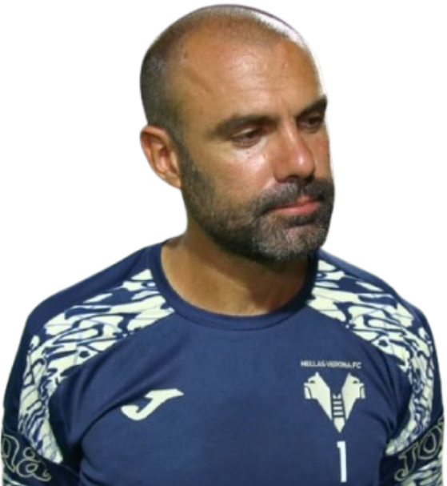
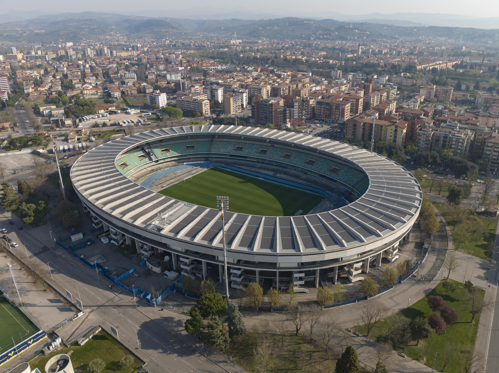

Treinador: Paolo Sammarco
Paolo Sammarco, ex-jogador e técnico da formação do Hellas Verona, assumiu a equipa principal como interino para garantir a manutenção na Serie A. Conhecedor profundo do clube, destaca-se pela aposta em jovens e por uma liderança pragmática fiel à identidade gialloblù.

Estádio: MarcAntonio Bentegodi
O estádio Marcantonio Bentegodi é um dos recintos mais históricos e singulares de Itália. Inaugurado em 1963, situa-se em Verona e serve de casa ao Hellas Verona, sendo famoso pela sua estrutura imponente e pela atmosfera vibrante que os adeptos locais criam.

Estilo de Jogo:
O estilo de jogo de Paolo Sammarco no Hellas Verona é pautado pela solidez defensiva e pela exploração rápida da verticalidade, adaptando-se à realidade de uma equipa que luta por cada ponto na Serie A.
"Zuliani e la Scala!"